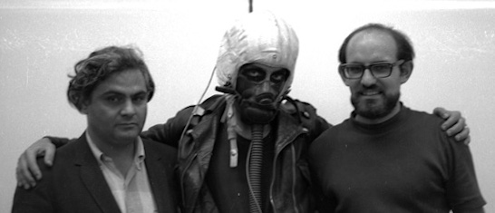

The Sal Martirano Digital Collection (SMDC) is the digital copy of Salvatore Martirano’s photos, negatives, recordings, musical scores, and personal papers such as contracts and correspondence among other things, all of which has been donated to the Creative Commons under the Attribution 3.0 license. The SMDC encompasses some 54,000 digital items, faithful digital copies and related archival data for some 13,000 negatives and photos, original articles and program notes, hundreds of audio recordings, dozens of videos, and snapshots of his 1995 Mac. All this data requires about 2TB of storage. The vast majority of these items originated during Sal’s life (1927-1995), however many newer items, such as interviews which provide context to his life, have been added into the SMDC since Sal’s passing. Most if not all the photos on sal.martirano.net are taken from the SMDC.
You can email John Martirano (johnmartirano at gmail dot com), son of Sal Martirano, with a description of what you are looking for, or with an item number from the SMDC index along with your intended usage.
Here are some in-progress index files which cover many but not all of the items in the collection. There are so many images that many are only described with grouping or category level metadata. Feel free to get in touch if you are searching for something specific:
Everything in the SMDC has been dedicated to the Creative Commons under the Attribution 3.0 license: https://creativecommons.org/licenses/by/3.0/us/
As a result, any content may be licensed for free by simply providing the appropriate attribution. Any derivative works must also be made available under the same license terms. (There are very few items in the collection with prior copyright claims, for example published works for which we retain the original recording but are under publishing agreements.)
It’s easy! A simple attribution as detailed below is required, if content is re-posted online, then it should at the very least include an embedded (or explicit) link to sal.martirano.net as well as a link to the license.
An attribution of a simple re-posting of the item will ideally be of the following form:
“Title” from the Salvatore Martirano Digital Collection is licensed under CC BY 3.0
An attribution typically has three or four parts, in this case we have three:
As an example, to license the photo below, see some possible attribution statements provided:
"S. Martirano, MC Holloway and R. Nameth" from the Salvatore Martirano Digital Collection is licensed under CC BY 3.0
A shorter but still sufficient attribution is:
"Photo" from the Martirano Collection / CC BY
A few notes:
The complete collection is currently under the care of Sal’s son, John Martirano, with plans to eventually host all of it permanently on the Internet Archive. The SMDC has its origins in 2007, when Dorothy and John Martirano undertook to organize and digitize all of Sal Martirano’s personal papers, photos, negatives, among other items. Under the direction of digital maestro Matthew David Benkert (https://luxpixel.com/), Dorothy and John Martirano undertook the creation of the Sal Martirano Digital Collection in order to facilitate the donation of the physical items to the University. Over a period of four months, Dorothy and John organized, prioritized and metadata tagged the physical items while Matthew tirelessly digitized, color corrected and logged the digital items. The physical papers were then donated to the University of Illinois Center for American Music.
In the following years, Ken Beck (http://kenbeck.blogspot.com/) would oversee the digitization of prioritized areas of the massive library of audio recordings in reel to reel and other analog formats. John Martirano digitized many of the videos and brought the L’sGA films by Ronald Nameth to California for professional film digitization. There are many items that were never digitized and the project is ongoing.
In 2008, Sal Martirano’s physical papers, original photos and negatives, original analog reel to reel and other recordings, films and other items that were part of his estate including the behemoth Sal-Mar Construction were donated to the Sousa Archives and Center for American Music (SACAM) at the University of Illinois at Champaign-Urbana where they occupy some 55 cubic feet of archival space.
You can browse the SACAM “Finding Aid for Salvatore Martirano Music, Personal Papers, and Sal-Mar Construction, 1927-1999.”
Information is also available in the University of Illinois Distributed Museum project: https://distributedmuseum.illinois.edu/exhibit/salvatore_martirano_/
{kind=link}